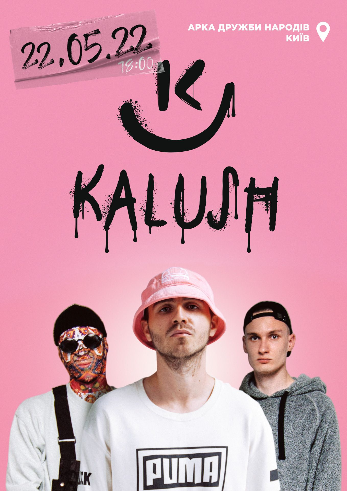

Kalush
оценка: 10 / 10 |
исполнитель: Kalush Orchestra |
год: 2022
История песни

Премьера клипа на композицию состоялась 7 февраля 2022 года. Видеоклип вышел на официальном канале группы в YouTube[8].
Видеоклип на песню был снят в помещении Железнодорожного рынка, расположенного на улице Кудряшова в Киеве. Режиссёром клипа стал известный украинский кинорежиссёр, победитель престижных американских и европейских премий Сергей Чеботаренко[9]. Самым главным его заданием было «показать и передать настроения людей разных профессий в сфере интертейминга»[10].
15 мая вышел еще один официальный клип на песню Stefania, посвященный погибшим в войне с Россией, матерям и защитникам Украины[11]. Съемки проходили в разрушенных в ходе российского вторжения на Украину городах Буче, Бородянке, Гостомеле и Ирпене[11].
Комментарии
Воображаемый друг
РУССКИЙ ВОЕННЫЙ КОРАБЛЬ ИДИ НАХУЙ
Воображаемый друг
РУССКИЙ ВОЕННЫЙ КОРАБЛЬ ИДИ НАХУЙ